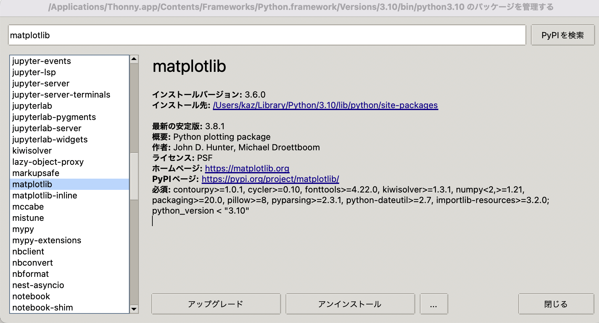

Pythonでグラフが表示されない場合の対処法
お手元のThonnyでmatplotlibがインポートされていないかもしれません．
実行しても以下のようなエラーメッセージが出る場合があります：

1. インポート文の確認
まずはプログラムの先頭に以下が記載されているか確認してください：
import matplotlib.pyplot as plt
スペルミスがないかも確認してください．
2. matplotlibライブラリのインストール
matplotlibのライブラリがインストールされていない可能性があります．
Thonnyでプログラムを書いている場合は，以下の手順でライブラリをインストールしましょう．
手順1: パッケージ管理を開く
画面上部のツール > パッケージを管理を開きます．

手順2: matplotlibを検索
以下の検索画面が開くのでmatplotlibを検索します．

手順3: matplotlibを選択
出てきたリストからmatplotlibを選びます．

手順4: インストール実行
インストールボタンを押してください（以下の画面ではアップグレードになっています）．
